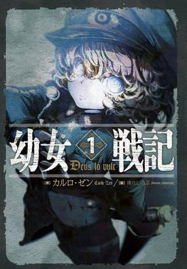

STRATEGY, SURVIVAL, AND BEING X
The Saga of Tanya the Evil follows a reincarnated salaryman reborn as Tanya Degurechaff in an alternate world shaped by industrial warfare and magic. Tanya’s goal is not heroism. She wants security, rank, and a life away from the front line, but her intelligence and ruthless efficiency keep placing her closer to the centre of conflict.
The series gains its identity from the contrast between Tanya’s modern strategic thinking and the world’s old military institutions. Battles are not only displays of magical firepower; they are contests of logistics, timing, command, and political calculation. Above Tanya’s ambition is the mysterious Being X, whose attempts to force faith into her life turn every victory into another layer of irony.
WHY IT MATTERS
Tanya the Evil is a sharp military fantasy about ideology, power, and the danger of treating people as pieces on a board. Tanya’s competence is fascinating, but the story constantly asks what that competence costs and whether survival without empathy can ever become freedom.
WATCH THE ANIME
Open the official Sword Art Online listing →